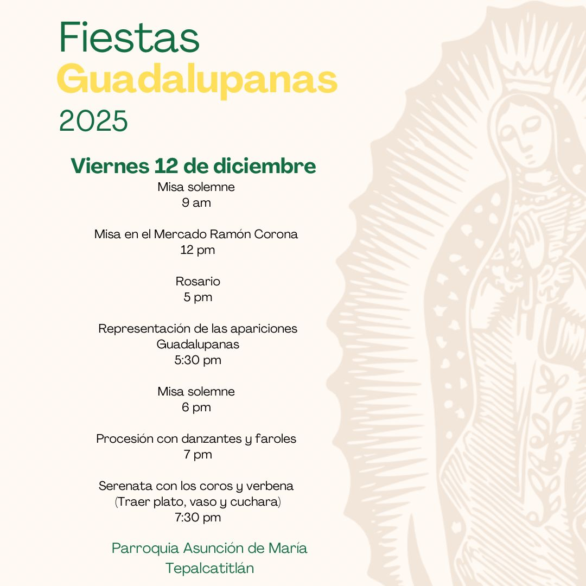

Parroquia Asunción de María
Industrial, Gustavo A. Madero, Ciudad de México
Industrial, Gustavo A. Madero, Ciudad de México
La comunidad de la Parroquia Asunción de María se prepara para realizar actividades por la festividad de Santa María de Guadalupe.
Estas actividades se realizarán el día viernes 12 de diciembre desde las 9 de la mañana y reanudando con el Santo Rosario a las 5 de la tarde dentro del templo.
Este año son varias actividades que se realizarán para celebrar a nuestra madre del cielo:
